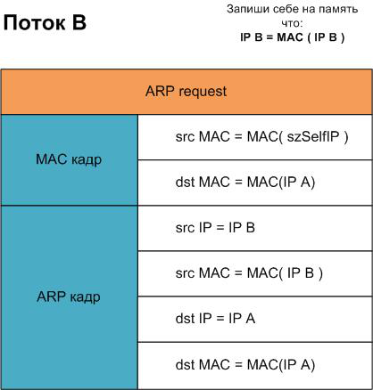
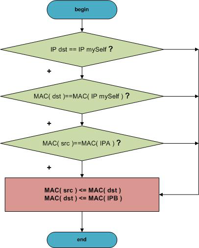
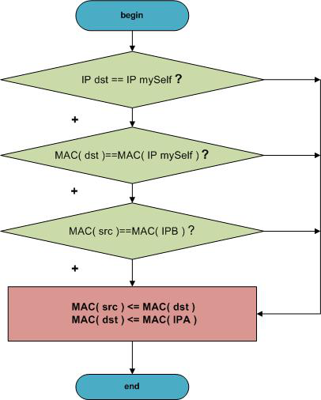
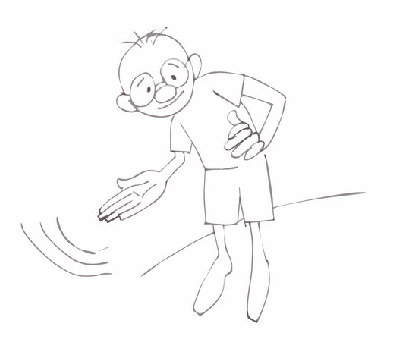

Большое чудо в маленьком офисе. Часть 3Хочется поприветствовать тех, кто выстоял, ведь этот туториал ,кажется, может утомить ))). Мы помним, как в прошлом шаге не рекомендовалось запускать программу. Дело в том, что программа, которая рассматривалась в прошлом шаге, двумя потоками генерировала неверное соответствие IPA – MAC(IPAttack) и IPB – MAC(IPAttack) у атакуемых машин. Так вот, если мы просто остановим эти потоки и не исправим ложное соответствие на истинное IPA – MAC(IPA) и IPB – MAC(IPB), то атакованным машинам придется ждать обновлений в своих локальных arp-таблицах какое-то время, или попросту ждать своей перезагрузки. Но мы хотим все провести программно и грамотно. Для корректировки данных, испорченных предшествующими потоками, мы запустим те же потоки снова, но новые потоки будут подавать обеим машинам истинные IP-MAC соответствия.  Вот как раз этим мы и займемся в рамках функции ResetSpoof().
Мы запустили два новых потока с истинными данными.
Причем мы даем 5-10 секунд на то, чтобы потоки поработали и "убедили" атакованные машины сменить данные в локальных arp – таблицах.
Далее просто останавливаем эти потоки и освобождаем память. Все, программу можно спокойно закрывать. Поэкспериментируйте с ней, запустите и наберите Ctrl+С. Через несколько секунд процесс завершится и все станет понятней. Итак, у нас по пути: Если помните второй шаг, то там мы наметили себе еще задачу перехвата трафика с IPA к IPB. Как реализовать эту задачу?
Сделать это можно средствами WinPcap. В ее недрах есть функция pcap_loop() Так и сделаем.
В рамках функции packet_handler() вызываем функцию ForwardPacket() и уже в рамках которой будем получать тело пакетов
(указатель pktdata) и анализировать его. Начинаем отлавливать и обрабатывать поток IPA-IPB.  Изменив заголовок пакета, отправляем его снова в сеть.  Изменив заголовок пакета, отправляем его снова в сеть Кажется понятно? Кстати, в этом месте программы можно дополнить функцию ForwardPacket() более сложной обработкой или, прости Господи – подменой, данных в пакете, тут очень удобно будет с ним работать. Подведем итоги. Полностью работающая программа лежит по пути: Также в папке files вы найдете простую программку по обнаружению атаки этого типа.
Эта консольная программа покажет, какие машины в сети меняли свои MAC адреса. Далее , если вы поняли,
где меняются адреса, нужно сесть за одну из них и позапускать
сниффер для определения хоста который ей шлет ARP-пакеты с ложными MAC-адресами. Вот та, которая шлет, та и есть "преступник". )) 
Проект не был сложным. Исходники: sources/__sheva740/miracle/03/files
|